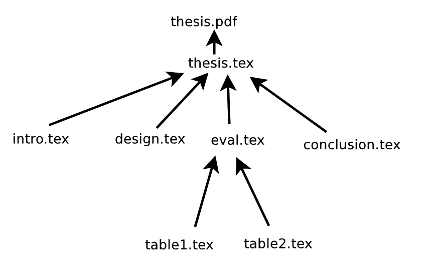

The goal of these exercises is to introduce you to the execution model of Makefiles.
Type in (cut-and-paste if you want, but you'll learn more by typing it):
CMD=cut -f 1
myexecutable: main.o linkedlist.o matrix.o
$(CMD) main.o linkedlist.o matrix.o > myexecutable
linkedlist.o: linkedlist.c linkedlist.h main.h
$(CMD) linkedlist.c > linkedlist.o
matrix.o: matrix.c matrix.h main.h
$(CMD) matrix.c > matrix.o
main.o: main.c main.h
$(CMD) main.c > main.o
test:
make myexecutable
wc ./myexecutable
clean:
-rm *.o
-rm myexecutable
setup:
touch linkedlist.c linkedlist.h main.h
touch matrix.c matrix.h main.h
touch main.c
Please try each of the following exercises and answer the following questions:
make clean make setup make touch main.c makeWhat actions are taken (aka what output do you see)? Can you explain why these actions (and no other actions) are taken?
fresh target that does the equivalent of the
clean and setup targets, without repeating
any of their action lines.
Once written, one would type make fresh to use your new target.
make fresh make touch linkedlist.c makeWhat actions are taken (aka what output do you see)? Can you explain why these actions (and no other actions) are taken?
make fresh make touch main.h makeWhat actions are taken (aka what output do you see)? Can you explain why these actions (and no other actions) are taken?
make command
in the following situation?
Read the timestamps and filenames carefully.
% ls -lt total 12 -rw-r--r-- 1 user user 0 2009-07-16 07:06 main.o -rw-r--r-- 1 user user 0 2009-07-16 06:25 main.h -rw-r--r-- 1 user user 0 2009-07-16 06:25 linkedlist.o -rw-r--r-- 1 user user 0 2009-07-16 06:24 linkedlist.c -rw-r--r-- 1 user user 0 2009-07-16 05:22 linkedlist.h -rw-r--r-- 1 user user 0 2009-07-16 04:05 main.c -rw-r--r-- 1 user user 0 2009-07-16 03:30 matrix.o -rw-r--r-- 1 user user 0 2009-07-16 03:29 matrix.c -rw-r--r-- 1 user user 0 2009-07-16 02:01 matrix.h -rw-r--r-- 1 user user 716 2009-07-16 01:25 Makefile % makeWhat actions are taken (aka what output do you see)? Can you explain why these actions (and no other actions) are taken?
make command
in the following situation?
Read the timestamps and filenames carefully.
% ls -lt total 12 -rw-r--r-- 1 user user 0 2009-07-17 06:25 matrix.c -rw-r--r-- 1 user user 0 2009-07-16 06:25 linkedlist.o -rw-r--r-- 1 user user 0 2009-07-16 06:24 linkedlist.c -rw-r--r-- 1 user user 0 2009-07-16 05:22 linkedlist.h -rw-r--r-- 1 user user 0 2009-07-16 04:07 main.o -rw-r--r-- 1 user user 0 2009-07-16 04:05 main.c -rw-r--r-- 1 user user 0 2009-07-16 03:41 matrix.o -rw-r--r-- 1 user user 0 2009-07-16 03:39 matrix.h -rw-r--r-- 1 user user 0 2009-07-16 02:11 main.h -rw-r--r-- 1 user user 716 2009-07-16 01:25 Makefile % makeWhat actions are taken (aka what output do you see)? Can you explain why these actions (and no other actions) are taken?
Time permitting, your TA/Instructor will ask you to write a new Makefile, to specification.
For example, write a Makefile to capture the dependencies of the following graph. Nodes are files or targets. Arrows or arcs are actions.
If you are familiar with latex, this will look familiar.
However, you can still write the Makefile with executables
like cat or cut, even if you do not
know how to use latex.
